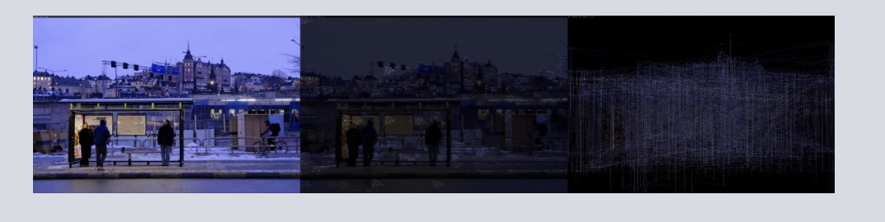

08 / Image · Code · Painting
Laboratoires visuels

Outcome 1
Laboratoires visuels
Outcome 2
Laboratoires visuels
Outcome 3
Laboratoires visuels
About the work
Statement
Statement forthcoming.
- Title
- Laboratoires visuels
- Year
- To be added
- Materials / media
- To be added
- Dimensions
- To be added
CV
Qianying Wang is a PhD candidate in Art and Culture at Nanjing University and holds an MA in Contemporary Art Theory from the University of Edinburgh.
Her research focuses on visual culture and contemporary art theory, with particular attention to visual experience, aesthetic judgement, cognitive mechanisms and technological mediation.
View CV on homepage ↗